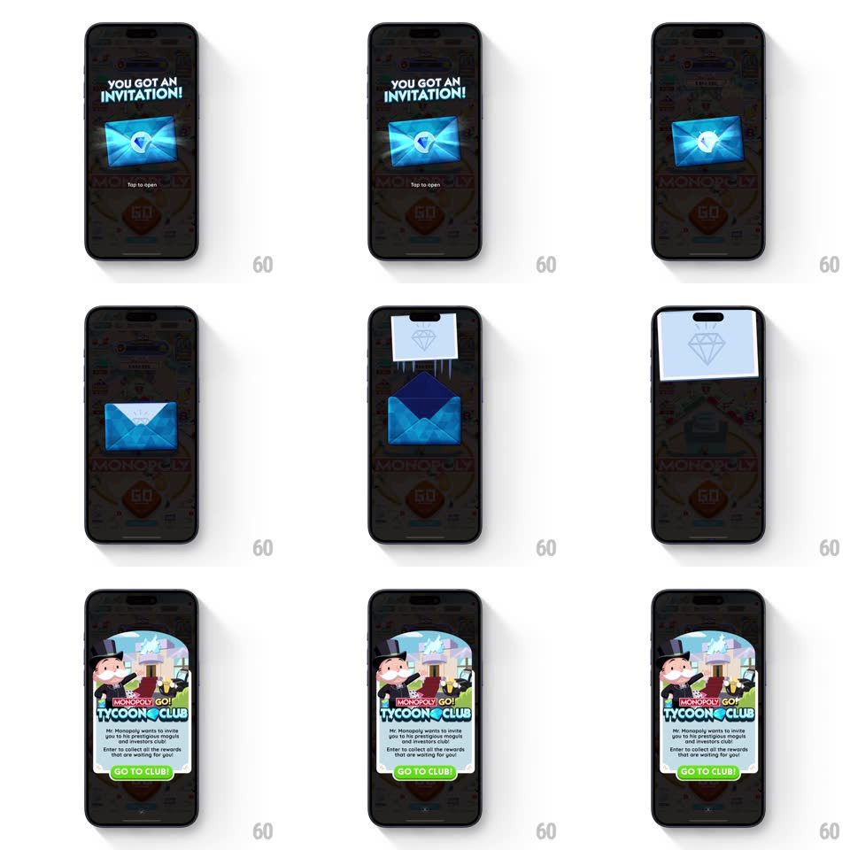

Media
Frame-by-frame

Rebuild this interaction 1:1: Monopoly Go's invitation - over the dimmed board, a glowing blue envelope sits under "YOU GOT AN INVITATION!"; tapping it pops the flap, the letter slides up out of the envelope with a bright flash, and the Tycoon Club invitation card springs in with a GO TO CLUB! button.

Rebuild this interaction 1:1: Monopoly Go's invitation - over the dimmed board, a glowing blue envelope sits under "YOU GOT AN INVITATION!"; tapping it pops the flap, the letter slides up out of the envelope with a bright flash, and the Tycoon Club invitation card springs in with a GO TO CLUB! button. ## Integration Integration: stack-agnostic spec - springs given as stiffness/damping, timed motions as duration + curve; map every value to your framework and animation library of choice. ## Scene The board behind is dimmed to near-black. Center stage: "YOU GOT AN INVITATION!" headline and a closed blue envelope with a light burst behind it and "Tap to open" microcopy. The reveal is a white invitation card with the Mr. Monopoly Tycoon Club illustration, invite copy, and a green GO TO CLUB! button. ## Motion spec Pattern: staged tap-to-open envelope sequence. - Idle: the envelope breathes (scale 1 -> 1.04, 1.6s loop) with a radial light burst pulsing behind it (opacity 20% -> 35%). - Tap: the envelope hops once (translateY -12px, 180ms, ease-out) and the flap springs open (rotateX 0 -> -160deg, 300ms, spring ~280/20). - The letter card slides up out of the envelope (translateY from inside -> -40% above, 400ms, ease-out) while a bright white flash blooms (opacity 0 -> 90% -> 0, 350ms) at the envelope mouth. - Flash peak: the invitation card pops in center-screen (scale 0.6 -> 1, spring ~320/18, 400ms with a visible overshoot wobble) as the envelope sinks and fades (translateY +30px, opacity -> 0, 300ms). - The card settles with one small bounce; GO TO CLUB! glows with a subtle shine sweep every 2.5s. ## Calibration - The flash and the card pop share their peak frame - the flash hides the swap. - The card's entrance is the only springy moment - envelope motions are simple eases. ## Reduced motion Envelope opens without hop; card appears with a simple fade. ## Don't miss - The envelope's glow burst rotates slowly (~20s per revolution) even at idle. - The card art bursts past its own top edge - Mr. Monopoly's confetti overlaps the card boundary.